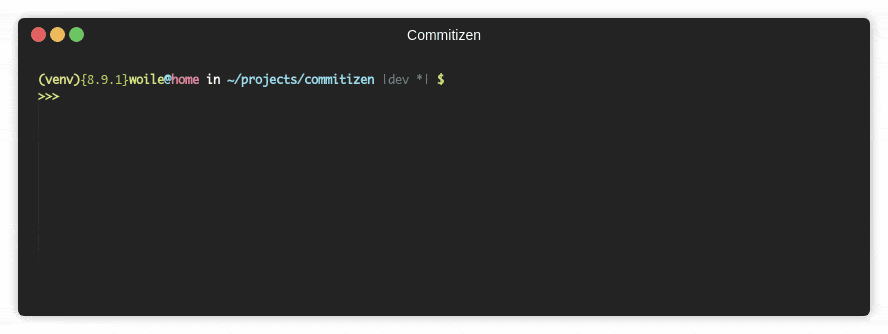

Introduction



Documentation: https://commitizen-tools.github.io/commitizen/
About¶
Commitizen is release management tool designed for teams.
Commitizen assumes your team uses a standard way of committing rules and from that foundation, it can bump your project's version, create the changelog, and update files.
By default, commitizen uses conventional commits, but you can build your own set of rules, and publish them.
Using a standardized set of rules to write commits, makes commits easier to read, and enforces writing descriptive commits.
Features¶
- Command-line utility to create commits with your rules. Defaults: Conventional commits
- Bump version automatically using semantic versioning based on the commits. Read More
- Generate a changelog using Keep a changelog
- Update your project's version files automatically
- Display information about your commit rules (commands: schema, example, info)
- Create your own set of rules and publish them to pip. Read more on Customization
Requirements¶
Python 3.8+
Git 1.8.5.2+
Installation¶
To make commitizen available in your system
pip install --user -U Commitizen
Python project¶
You can add it to your local project using one of these:
pip install -U commitizen
for Poetry >= 1.2.0:
poetry add commitizen --group dev
for Poetry < 1.2.0:
poetry add commitizen --dev
macOS¶
via homebrew:
brew install commitizen
Usage¶
Most of the time this is the only command you'll run:
cz bump
On top of that, you can use commitizen to assist you with the creation of commits:
cz commit
Read more in the section Getting Started.
Help¶
$ cz --help
usage: cz [-h] [--debug] [-n NAME] [-nr NO_RAISE] {init,commit,c,ls,example,info,schema,bump,changelog,ch,check,version} ...
Commitizen is a cli tool to generate conventional commits.
For more information about the topic go to https://conventionalcommits.org/
optional arguments:
-h, --help show this help message and exit
--config the path of configuration file
--debug use debug mode
-n NAME, --name NAME use the given commitizen (default: cz_conventional_commits)
-nr NO_RAISE, --no-raise NO_RAISE
comma separated error codes that won't rise error, e.g: cz -nr 1,2,3 bump. See codes at https://commitizen-
tools.github.io/commitizen/exit_codes/
commands:
{init,commit,c,ls,example,info,schema,bump,changelog,ch,check,version}
init init commitizen configuration
commit (c) create new commit
ls show available commitizens
example show commit example
info show information about the cz
schema show commit schema
bump bump semantic version based on the git log
changelog (ch) generate changelog (note that it will overwrite existing file)
check validates that a commit message matches the commitizen schema
version get the version of the installed commitizen or the current project (default: installed commitizen)
Setting up bash completion¶
When using bash as your shell (limited support for zsh, fish, and tcsh is available), Commitizen can use argcomplete for auto-completion. For this argcomplete needs to be enabled.
argcomplete is installed when you install Commitizen since it's a dependency.
If Commitizen is installed globally, global activation can be executed:
sudo activate-global-python-argcomplete
For permanent (but not global) Commitizen activation, use:
register-python-argcomplete cz >> ~/.bashrc
For one-time activation of argcomplete for Commitizen only, use:
eval "$(register-python-argcomplete cz)"
For further information on activation, please visit the argcomplete website.
Sponsors¶
These are our cool sponsors!